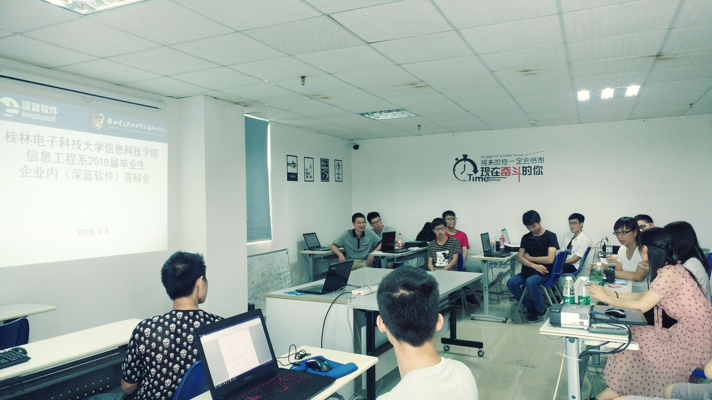
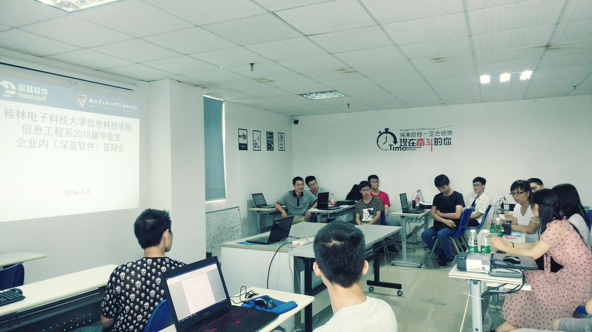
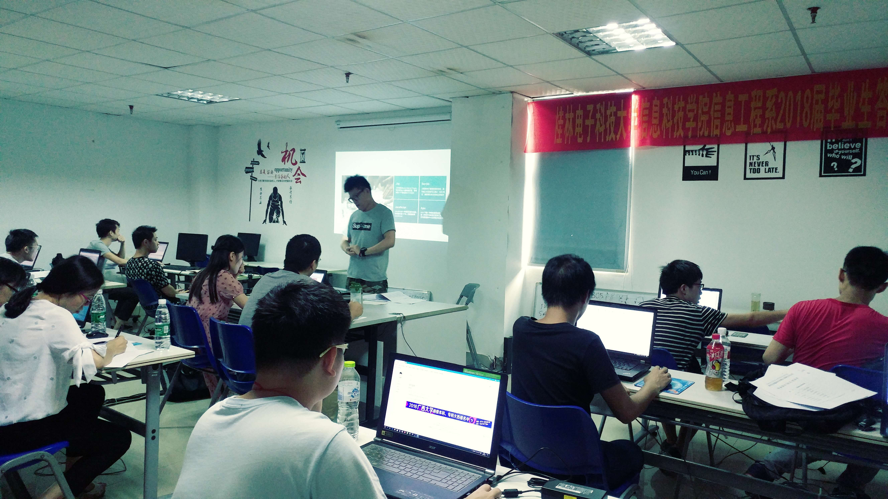
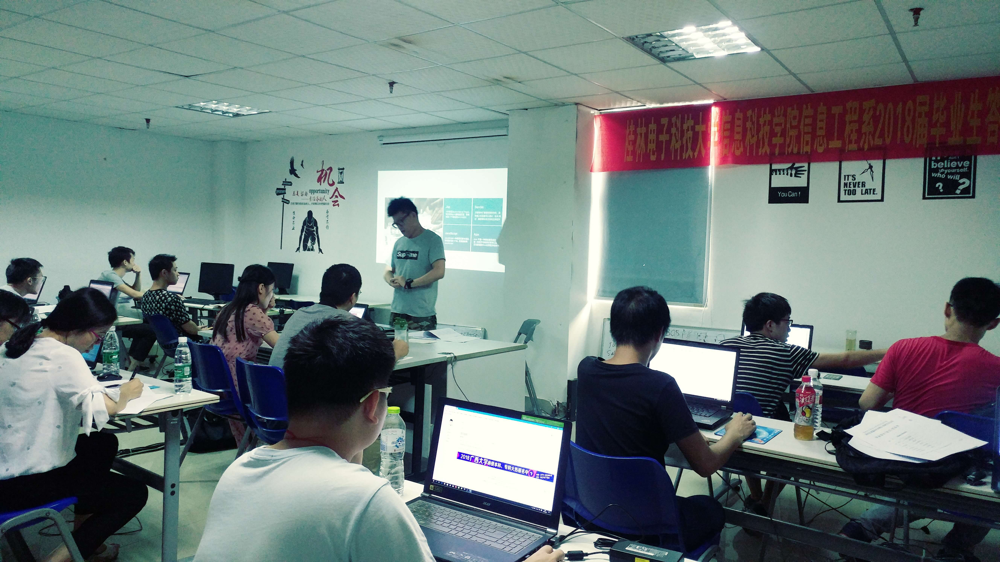

桂林电子科技大学信息科技学院信息工程系在深蓝软件顺利进行2018届毕业生论文答辩工作
更新时间:2018年06月06日 来源:深蓝软件
6月06日上午，桂林电子科技大学信息科技学院信息工程系龙丹老师等一行来到南宁深蓝公司，负责给2018届部份在深蓝实习及工作的毕业生进行论文答辩，在答辩会场中，学生们经过精心准备，用翔实的资料、清晰的陈述、精彩的辩论，展示了他们大学四年中学习、实验、科研的成果，对于学生的毕业论文，答辩委员从论文撰写质量、对待论文的态度、研究水平与实际能力、学术水平与创新能力及答辩情况等方面进行了评审。 对于毕业生的毕业设计作品及答辩表现，老师们给予极高的评价！答辩完毕，大家即将走向自己各自的工作岗位及进入新的人生征程而努力，加油吧！
 

 
